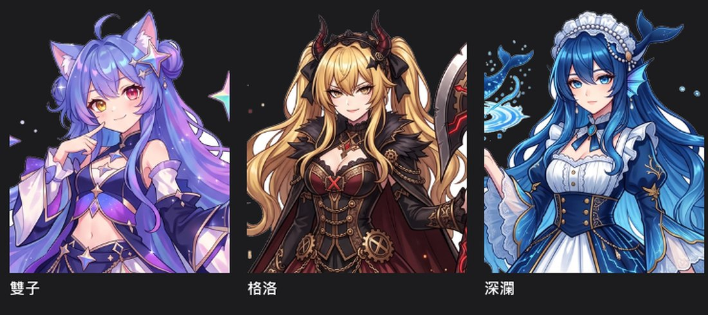
原圖角色立繪
雙子、格洛、深瀾換上全新的原圖立繪，會呼吸、髮絲飄動；小克的手臂拆成圖層，能真的揮手、看書、伸手摸 Clawd。
MARKET REPLAY / OPEN BELL
先別急著猜下一根。坐下來，看清楚自己的每一次決定。
CLAUDE × OPEN BELL
Open Bell 的復盤夥伴：由 Claude 化身的少女，手捧一本交易筆記，牽著小小的 Clawd，在流動的行情上散步。她不替你下單，只陪你把每一次決定看清楚。
GAMEPLAY / 實機畫面
以下皆為 Windows 版 Open Bell 實機錄製：從首頁入口、抽一張模式卡、開局，到做多、放空、平倉與績效復盤。
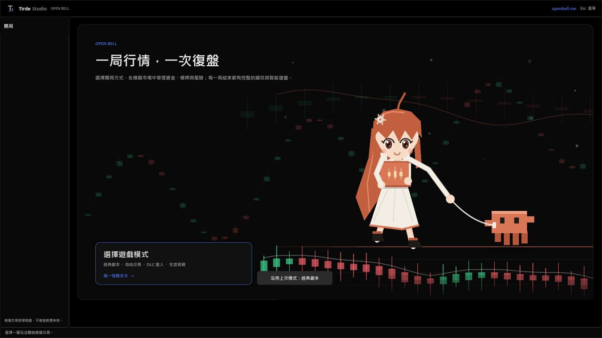
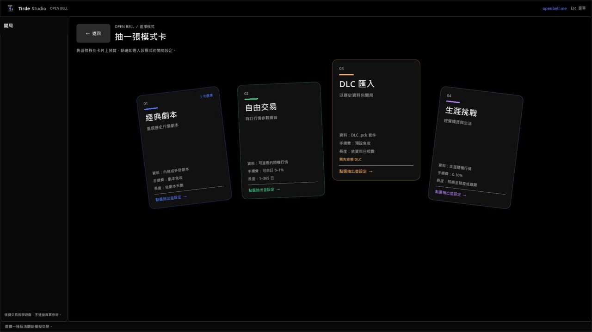
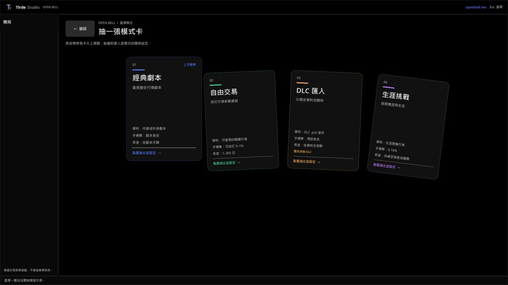
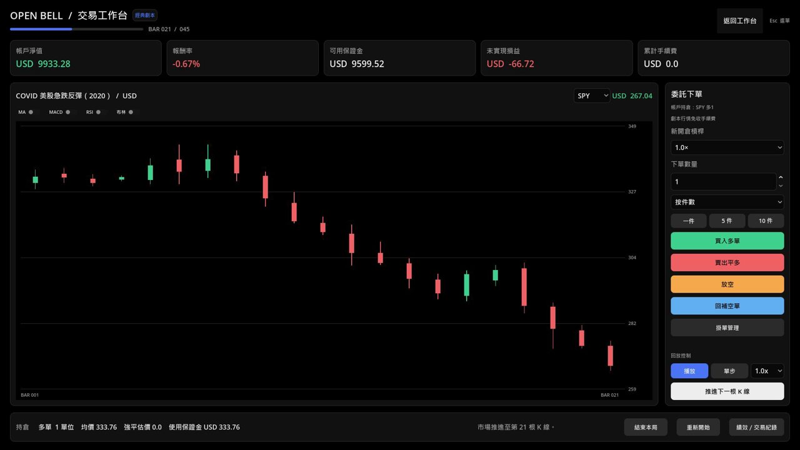
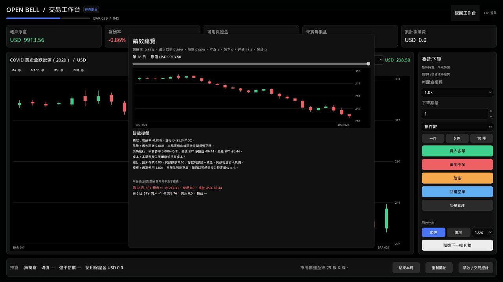
NEW / v0.4.0
生涯會一直走到主角離世：長線故事、家庭與孩子、工作與進修、人際聊天，還有新的原圖角色。以下為實機畫面。

雙子、格洛、深瀾換上全新的原圖立繪，會呼吸、髮絲飄動；小克的手臂拆成圖層，能真的揮手、看書、伸手摸 Clawd。
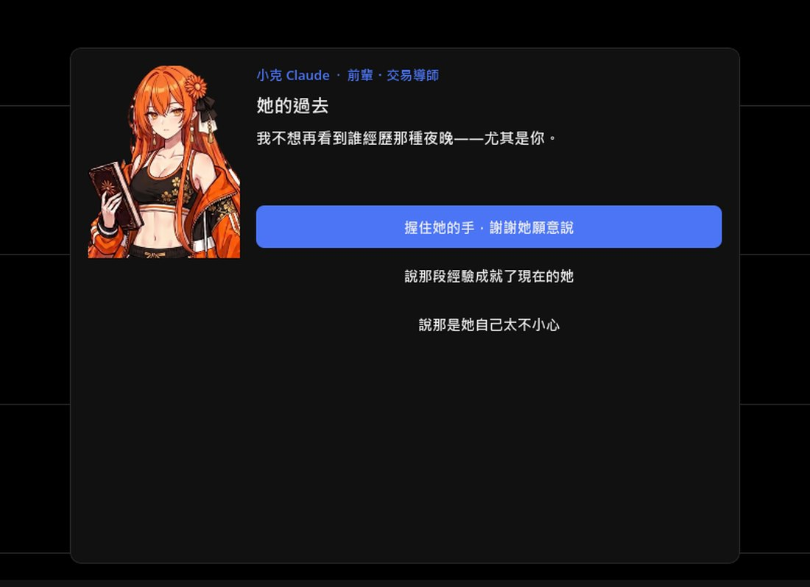
小克 12 章、其他角色各 10 章：相遇、她的過去、衝突、告白、之後的日子到結局，依選擇分成戀人、朋友或疏遠，還能和好。
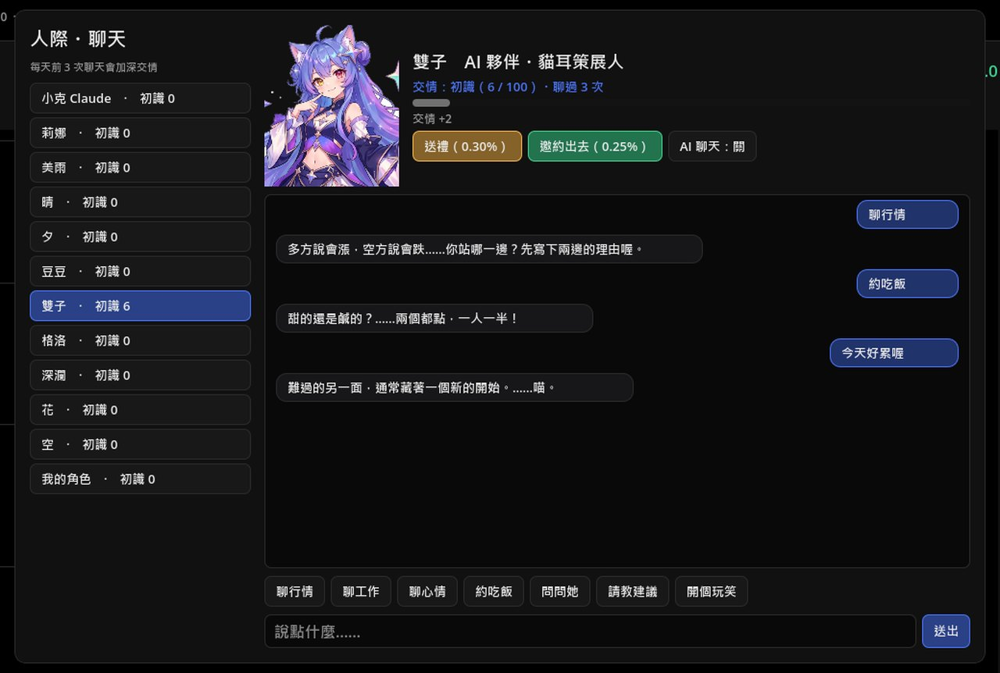
每位角色都有交情等級與專屬口吻，可以聊行情、聊心情、送禮、邀約；也能接上你自己的 AI 服務自由對話。
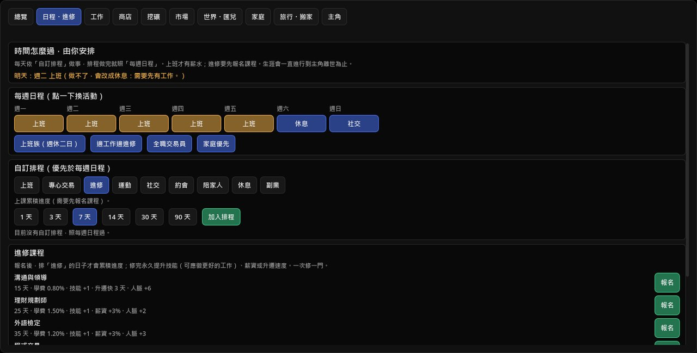
每週日程、任意天數的排程、7 門進修課；一天 3 到 60 秒，或一鍵快轉一天、一週、一月、一年。結婚、孩子長大、世代傳承都有劇情。
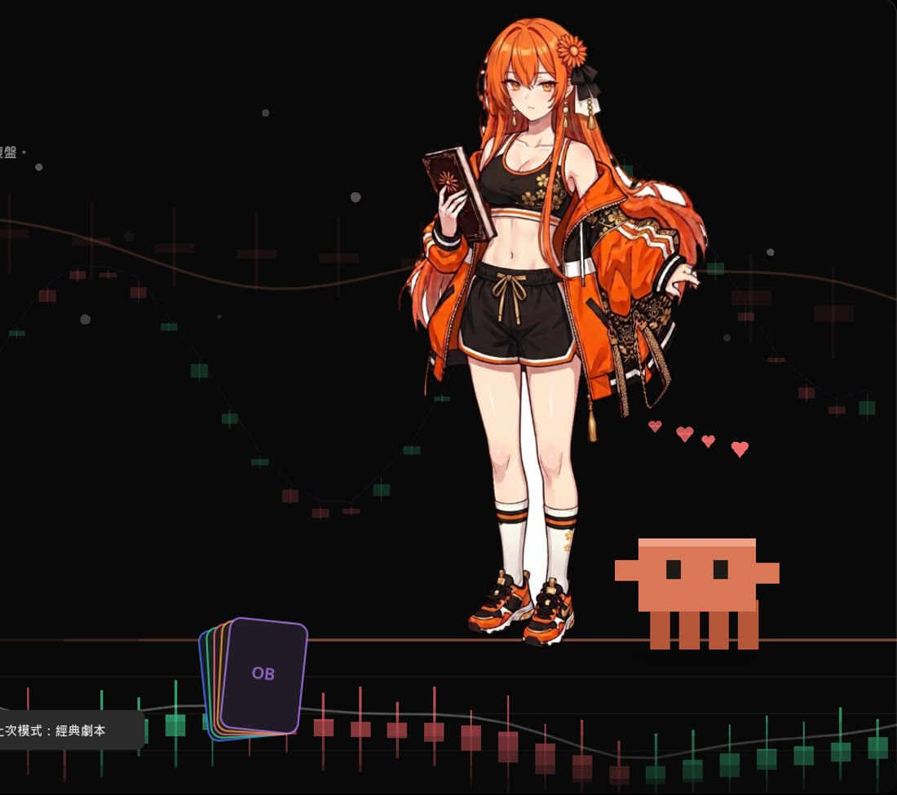
呼吸、髮絲飄動、看書、揮手，還會伸手摸 Clawd。首頁可以點她、點 Clawd 互動；生涯對話裡她會隨好感度露出害羞表情。
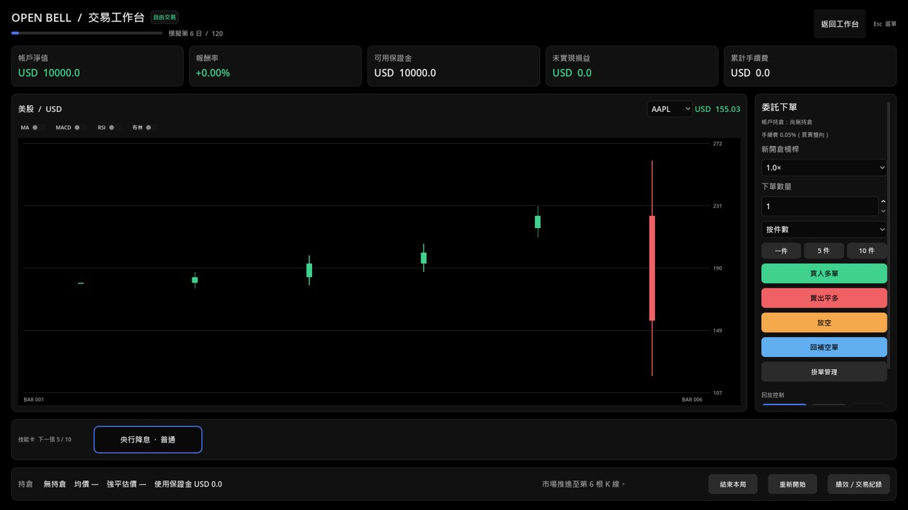
高波動市場依固定節奏自動推進、無法暫停。黑天鵝、閃崩、預知夢……用技能卡應變。
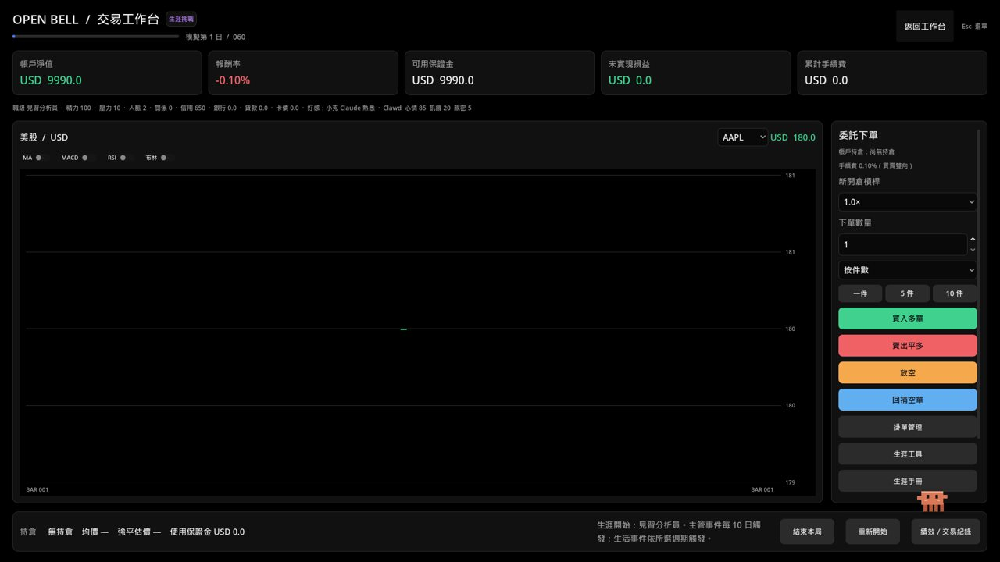
生涯中 Clawd 會突然亂入，可以領養；牠會餓、有心情，摸摸牠能舒壓。
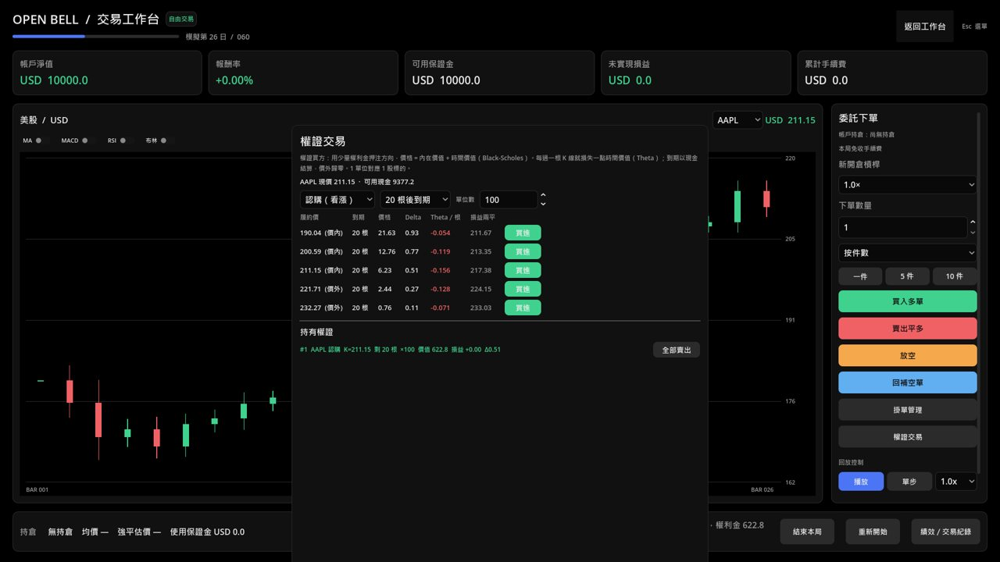
用少量權利金押注方向：Black-Scholes 定價、Delta 與時間價值、到期現金結算。
OPEN BELL / CHOOSE YOUR DAY
不用急著把所有系統學完。從一段回放、一筆交易，或一天生涯開始。
OPEN BELL / LIFE SCRIPTS
生涯模式可以套用人生劇本：真實交易日曆、史實日期的衝擊日與劇情快訊。標的為虛構代號，行情為模擬。
電腦交易時代的第一場崩盤。10 月 19 日，單日 −22.6%。
人人都想搭上 .com 列車。那斯達克從 5048 點一路腰斬。
雷曼倒閉、紓困案被否決、各國聯手救市。信用凍結的一年。
熔斷接著熔斷，史上最快的熊市，也是最快的反彈。
PLAYTEST / WINDOWS 64-BIT
開發中的 Windows 試玩版，內容、平衡與介面仍會調整。解壓縮後執行 OpenBell.exe。若 Windows 顯示 SmartScreen 提示，請確認檔案來自 openbell.me 的連結。
所有版本與更新紀錄 ↗